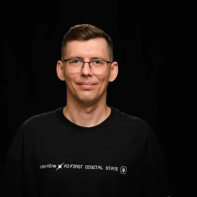
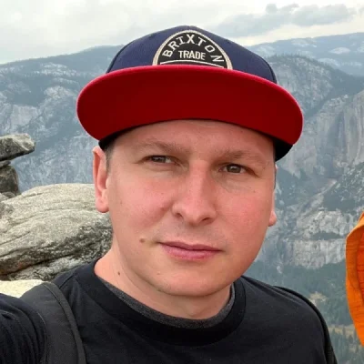
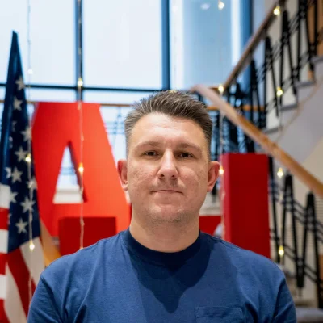
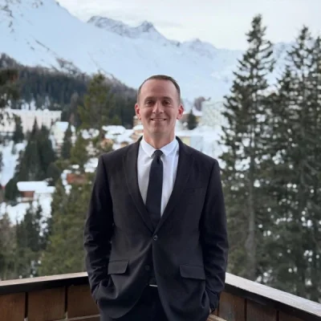
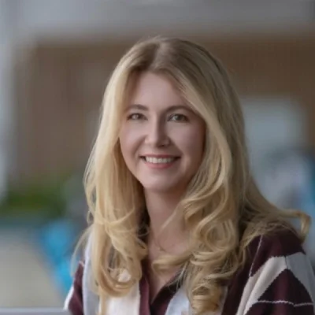
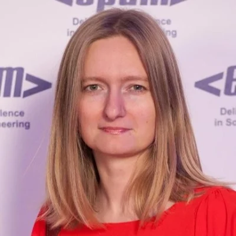
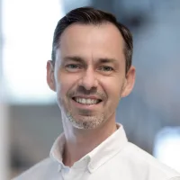
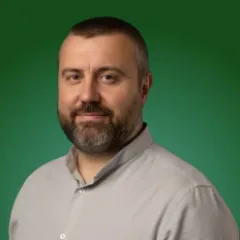

Програма «Master of Software Engineering – AI & Software Architecture» спрямована на формування стратегічного та системного розуміння сучасної інженерії програмного забезпечення в умовах трансформації, зумовленої розвитком штучного інтелекту.
Повний цикл розробки
Від дослідження продукту й архітектурного проєктування до розробки, тестування, впровадження та безперервного вдосконалення — з інтенсивним застосуванням AI на кожному етапі.
Практика від лідерів індустрії
Академічна база поєднана з практичним досвідом CTO, AI-лідерів та інженерів провідних технологічних компаній.
Три стратегічні навички
Проєктування програмної архітектури, AI-нативна розробка та управління технологічними продуктами на стратегічному рівні.
Після завершення програми
Студенти стануть спеціалістами у:
Software Architecture, System Design & AI
Проєктуватимете складні, масштабовані та стійкі програмні системи, поєднуючи сучасні архітектурні підходи з практичним використанням AI — як на етапі архітектурного проєктування, так і як потенційної складової самої системи.
AI-Driven Software Development & SDLC
Опануєте повний цикл розробки програмного забезпечення з інтеграцією штучного інтелекту на кожному етапі — від product discovery та проєктування до тестування, deployment і безперервного вдосконалення систем.
Technology Leadership & Innovation
Розвиватимете стратегічне мислення та управлінські навички, необхідні для лідерства в технологічних командах, запуску інноваційних продуктів і роботи на перетині бізнесу та технологій.
Кар'єрні можливості
Випускники впевнено працюють на перетині програмної інженерії, архітектури та технологічного лідерства
Викладачі
Досвід, який формує програму

Дмитро ОвчаренкоCTO, Defense AI Center «A1»
Віктор ТурськийEx-Google engineer, співзасновник ІТ-компанії
Олександр ЙосипенкоIT Project & Program Manager, Delivery Manager
Семюел П. Н. КукТехнологічний підприємець, West Point graduate
Марина ДідковськаSenior Director, Quality Engineering, EPAM Systems, PhD
Тетяна СвірідоваDirector, Software Engineering, EPAM, PhDЯцек ЛеськовПрофесор і ректор, American University Kyiv, PhDНавчальний план
Основні курси
AI in Software Architecture
Викладачі

Сергій ТитенкоДмитро Овчаренко — CTO Defense AI Center «A1», Міністерство оборони України.
Сергій Титенко — PhD, декан EPAM School of Digital Technologies.
AI-Driven Software Development
Викладач

В'ячеслав КолдовськийCompetence Manager у SoftServe. Експерт і тренер з AI-орієнтованого SDLC та сучасних підходів до розробки програмного забезпечення.
Software Design and Architecture
Викладачі
Сергій Титенко — PhD, декан EPAM School of Digital Technologies.
Віктор Турський — колишній інженер Google, співзасновник ІТ-компанії.
Software Engineering & AI: Principles and Concepts
Викладач
IT Project & Program Manager, Delivery Manager. PMP | PSM II | Certified LeSS Practitioner | SPS | SAFe 6 Scrum Master & Agilist | Registered Scrum Master@Scale.
Technology Entrepreneurship
Викладач
Випускник West Point та технологічний підприємець. Заснував програмно-орієнтовані компанії, зокрема SanityDesk та James Cook Media, з досвідом військового лідерства й викладання.
Software Verification, Validation and Testing
Викладачі
Марина Дідковська — Senior Director, Quality Engineering, EPAM Systems, PhD, керівниця практики Quality Engineering в регіонах Україна, Центральна та Східна Європа, Західна Європа.
Тетяна Свірідова — Director, Software Engineering, EPAM, PhD.
Software Project, Process and Quality Management
Викладач
IT Project & Program Manager, Delivery Manager. PMP | PSM II | Certified LeSS Practitioner | SPS | SAFe 6 Scrum Master & Agilist | Registered Scrum Master@Scale.
Research Seminar: Digital Technology
Викладач
Яцек Леськов, PhD — професор і ректор American University Kyiv, зі значним міжнародним науковим досвідом, зокрема в University of California, Santa Barbara.
Структура програми
Структура програми MSE складається з основних курсів, курсів вільного вибору, практики та кваліфікаційної роботи, що разом складає 90 ECTS.
(8 предметів)
вибору
проект
Курси вільного вибору — 4 вибіркові предмети з каталогу на основі професійних інтересів студента.
Вступ
Вимоги до кандидатів
- Диплом бакалавра/магістра
- Англійська мова на рівні B2+ (TOEFL internet-based: не нижче 80; IELTS academic: не нижче 6.0; PTE: не нижче 60; або Duolingo: не нижче 100)
- Мотиваційний лист англійською
- Резюме англійською мовою
- Відео-відповідь англійською мовою
- Результати ЗНО: UPEE (ЄФВВ) 120+; UEE (ЄВІ) 160+; ECT (ТЗНК) 120+
Необхідні документи
- Аплікаційна форма
- Паспорт громадянина України
- РНОКПП
- Сертифікат про рівень володіння англійською мовою
- Фотокартка розміром 3×4 см в електронній формі
- Диплом та Додаток до диплома
- Військовооблiковий документ (для військовозобов'язаних)
Гранти від АЮК
Honor
Стипендійна програма, що вшановує внесок Захисників і Захисниць України та підтримує їхні родини, надаючи майже повне покриття навчання.
Leaders of the Future
Для абітурієнтів із високими академічними результатами — значне або повне покриття вартості навчання.
Wartime Scholarship
Відповідь університету на економічні виклики війни. Часткове покриття вартості навчання для всіх вступників.
Вступний процес
Поспілкуйся з експертом із залучення студентів АЮК
Заповни форму та надай свої дані, і представник університету зв'яжеться з тобою, щоб відповісти на всі питання, ознайомити з деталями програми та процесом вступу.
Заповни реєстраційну форму АЮК
Створи особистий кабінет в онлайн-просторі абітурієнта АЮК. Форма заповнюється англійською; потрібно завантажити документи, резюме та мотиваційний лист.
Пройди оцінку відповідності вимогам програми
Тести, відкриті запитання та відео-відповідь. Успішним абітурієнтам запропонуємо місце на програмі та варіанти стипендій.
Підпиши договір з АЮК
Обери конкурсну пропозицію в ЄДЕБО, надай офіційні документи, отримай підтвердження зарахування та підпиши контракти.
Часті запитання
Що таке магістратура з програмної інженерії (AI & Software Architecture)?
Це магістерська програма з програмної інженерії в Україні, яка фокусується на проєктуванні систем, архітектурі програмного забезпечення та інтеграції штучного інтелекту в розробку продуктів.
Чим ця магістратура з AI відрізняється від класичної Software Engineering?
На відміну від класичної магістратури з програмної інженерії, програма орієнтована на AI-first підхід — використання штучного інтелекту як базового елементу системної архітектури та процесів розробки.
Чи можна навчатися на AI магістратурі в Києві?
Так, програма доступна в Києві у гнучкому форматі (офлайн, онлайн або hybrid), що дозволяє поєднувати навчання з роботою.
Чи потрібен досвід програмування для вступу на магістратуру Software Engineering?
Потрібен базовий технічний бекграунд або досвід у програмуванні. Програма розрахована на тих, хто хоче перейти на рівень архітектури систем, AI та технологічного лідерства.
Які навички дає магістратура з AI та Software Engineering?
Після навчання ви зможете: проєктувати масштабовані програмні системи; інтегрувати AI в архітектуру продуктів; працювати з повним SDLC із використанням AI; приймати технічні та стратегічні рішення; керувати інженерними командами.
Які кар'єрні можливості після магістратури з програмної інженерії та AI?
Випускники можуть працювати як Software Architect, AI Engineer / AI Architect, Tech Lead / Engineering Manager, CTO / Head of Engineering, Technology Consultant.
Хто викладає на програмі магістратури з AI в Україні?
Навчання ведуть міжнародні експерти: CTO, AI-лідери, інженери з EPAM, SoftServe та інших технологічних компаній.
Чи є можливість отримати міжнародний диплом?
Так, програма передбачає можливість подвійного диплому з Arizona State University.
Чи підходить ця програма для переходу в AI?
Так, магістратура допомагає перейти в сферу AI через практичне застосування штучного інтелекту в програмній інженерії та архітектурі систем.
Який формат навчання на магістратурі Software Engineering в Україні?
Програма має гнучкий формат: онлайн, офлайн або hybrid, що дозволяє поєднувати навчання з професійною діяльністю.
Чим ця магістратура з програмної інженерії унікальна?
Програма поєднує software engineering, штучний інтелект та технологічне лідерство, готуючи фахівців до роботи з AI-native системами на міжнародному рівні.
Master of Software Engineering — AI & Software Architecture
Виведіть кар'єру на новий рівень на перетині програмної інженерії та штучного інтелекту.
Отримати консультацію